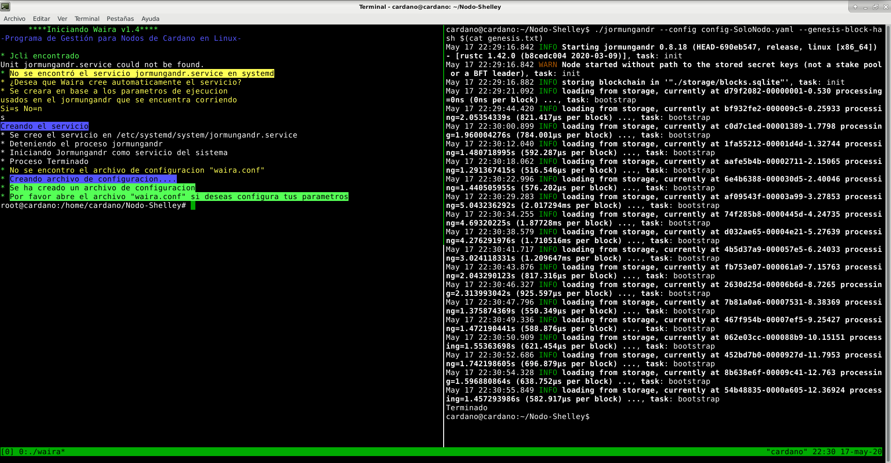

Waira
Un Bot para gestionar tu Pool en linux.
Waira es un Bot escrito en C++ diseñado para distribuciones linux x86_64, trabaja en conjunto con el jcli y jormungandr este ultimo debe correr bajo Systemd. El Bot esta diseñado para mantener el nodo activo frente a inestabilidades de la red (cuelgues) y actualizado cuando sale una nueva versión del jormungandr, además posee una integración con pooltool para poder enviar tus Slots y HeightBlock a su pagina. El Bot consta de un ejecutable "waira" y un archivo de configuración "waira.conf".
El Código para compilar este programa lo puedes descargar de Github.
Waira debe ir en la misma carpeta donde se encuentra el jormungandr y el jcli, para que las actualizaciones automáticas funcionen.
Jormungandr debe correr como un servicio bajo Systemd, el nombre del servicio debe llamarse "jormungandr.service", para que Waira pueda funcionar
Correr Jormungandr con Systemd
Antes de ejecutar Waira, será necesario tener a Jormungandr como un servicio del sistema, esto se logra por medio de Systemd, la nueva versión de Waira tiene la capacidad de crear el servicio para el jormungandr automáticamente, la forma de correlo lo puedes ver mas adelante, en el apartado de Ejecución.
Si deseas crear manualmente el servicio lo puedes leer en el manual que está aqui. Al tener a Jormungandr como un servicio del sistema, facilita a Waira la interacción con él, permitiendo entre otras cosas, la acción de poder auto actualizarlo cuando se liberan nuevas actualizaciones. Además, al ser un servicio del sistema este funcionara en segundo plano, siendo de ayuda para personas que acceden a sus servidores por SSH.
Sobre el archivo de configuración waira.conf
Es un archivo de configuración en formato JSON, si al momento de ejecutar waira no se encuentra el archivo de configuración este creara uno por defecto. Sus parámetros son los siguientes:
waira.conf debe estar en la misma carpeta donde se encuentra el ejecutable waira.
actualizaciones_automaticas: Es una opción booleana, un "true" habilita las actualizaciones automáticas y un "false" deshabilita las actualizaciones automáticas.
intervalo_tiempo_consulta_actualizaciones_automaticas: Indica en minutos, cada cuanto tiempo se realizara una comprobación de actualizaciones, por defecto son 60 minutos.
sendtip_pooltool: Esta es una opción booleana , un "true" habilita el envió de tu heightblock y slots a pooltool y un "false" deshabilita el envió.
poolID: Aquí debes indica la id de tu pool.
userIDpooltool: Aqui debes indicar el id de tu usuario de pooltool.
port_rest: Aquí se debe indicar el puerto de tu rest.
intervalo_tiempo_consulta_rest: Indica en minutos, cada cuanto tiempo se realizara una consulta al rest para revisar los datos del pool, por defecto son 1 minutos.
retraso_tiempo_bloque_maximo_permitido: Indica en minutos, cuanto es el tiempo máximo de retraso permitido entre el bloque recibido y el tiempo de la máquina, si el tiempo es excedido, el pool se reinicia. Este sistema se usa en los casos en el que el pool quede pegado en algún bloque debido a un fork o por inestabilidad de la red. Por defecto son 6 minutos.
La configuración debería verse como en la imagen de abajo.

Ejecución de Waira
Antes de ejecutar el programa es necesario ubicar el ejecutable "waira" (el que se obtuvo de la compilación) dentro de la carpeta donde se encuentra el jormungandr y el jcli. Para ejecutar Waira debes hacerlo en modo administrador para que pueda interactuar con Systemd.
sudo ./waira
En caso de que falte algún requisito para poder funcionar correctamente el programa lo indicara al inicio de éste, como se ve en este ejemplo.
****Iniciando Waira****
-Programa de Gestión para Nodos de Cardano en Linux-
Unit jormungandr.service could not be found.
* No se encontro el servicio jormungandr.service en systemd
Si todo funciona ok, te preguntara si deseas que cree el servicio para el jormungandr por ti, si es que aún no lo tienes creado, para ello deberás tener tu jormungandr corriendo en paralelo para que el Bot pueda copiar tu configuración e incluirla en la creación del servicio. Solo deberás aceptar con "s", luego ENTER y listo el Bot hará todo por ti, tal como se ve a continuación:
Como se puede apreciar, al momento que se crea el servicio en Systemd tu proceso del jormungandr que tenías corriendo se detiene automáticamente. Ahora en este momento el jormungandr se encuentra corriendo como un servicio del sistema, puedes ver su estado con:
sudo systemctl status jormungandr
Para detener tu servicio jormungandr es con:
sudo systemctl stop jormungandr
Para volver a iniciar tu servicio jormungandr
sudo systemctl start jormungandr
Si deseas por ejemplo actualizar los binarios del jormungandr, solo debes detener el servicio, reemplazas los binarios de tu directorio por los nuevos y luego inicias el servicio nuevamente. Como vez sera mucho mas simple ahora trabajar con él siendo es un servicio.
Luego de crear el servicio en caso de que no exista el archivo de configuración de Waira, este será creado, luego el Bot te pedira que lo abras para que lo edites y pongas la configuración de tu preferencia, por ejemplo tus configuraciones para pooltool. Después de ello ya puedes volver a iniciar Waira y se deberia ver como acontinuación:
****Iniciando Waira****
-Programa de Gestion para Nodos de Cardano en Linux-
* El servicio jormungandr.service en systemd existe
* Jcli encontrado
* Archivo de configuracion "waira.conf" encontrado
* Proceso de configuracion terminado *
**Comenzando monitoreo**
----------jormungandr 0.8.14-9ca427ef------------
El Pool Funciona Bien
Mi lastBlockDate: 90.6518 (15% Epoca Completada)
Mi HeightBlock: 298928 | Pooltool HeightBlock:298929
Tiempo en linea: 53701 segundos
% de Tiempo Operativo por Epoca:
Detectada Nueva Epoca, Reiniciando el Conteo
-------------------------------------------------
Para detener el programa solo debes presionar CRTL+C y este se cerrara.
Una vez que ves que todo funciona bien, si lo deseas, puedes dejar a Waira corriendo en segundo plano con:
sudo ./waira>waira.log &
De esta manera estamos guardando todos los registros del programa que suceden en segundo plano en el archivo waira.log, ahora en la terminal haciendo un "cat" en el archivo waira.log podremos ver todo lo registrado.
cat waira.log
Obtendrás algo similar a la imagen de abajo.

Detener el proceso de segundo plano
Si deseas eliminar el proceso que está en segundo plano puedes usar htop para encontrarlo y eliminarlo, lo puedes abrir escribiendo htop en la terminal, si no está disponible deberás instalarlo con un simple:
sudo apt install htop
Ahora que ya lo tienes instalado, lo haces correr desde la terminar en modo administrador.
sudo htop
Para buscar nuestro proceso oprimes F4 y escribe "./waira" tal como se ve en la imagen.

Ahora que lo encontraste presiona ENTER para seleccionar, luego oprimes F9 para seleccionar el modo KILL que es para detener procesos, éste despliega un menú de opciones puedes elegir el que se ve en la imagen.

Oprimes ENTER y listo, si lo buscas nuevamente ya no debería estar.
Para salir de htop debes apretar la tecla q
Dentro de las características que deseo agregar a futuro es implementar una protección frente ataques ddos.
Si deseas apoyarme para seguir creando más contenido en español, puedes hacerlo delegando en mi Pool.